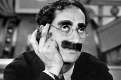

Citas de Groucho Marx
¡Hay tantas cosas en la vida más importantes que el dinero! ... ¡Pero cuestan tanto!
Citadme diciendo que me han citado mal.
El secreto de la vida es la honestidad y el juego limpio. Si puedes simular eso, triunfarás.
Encuentro la televisión muy educativa. Cada vez que alguien la enciende, me retiro a otra habitación y leo un libro.
Es mejor estar callado y parecer tonto, que hablar y despejar las dudas definitivamente.
Frases atribuidas a Groucho Marx. Si no te gustan, tengo otras.
He disfrutado mucho con esta obra de teatro, especialmente en el descanso
¿Morirme, querida? ¡Eso es lo último que haría!